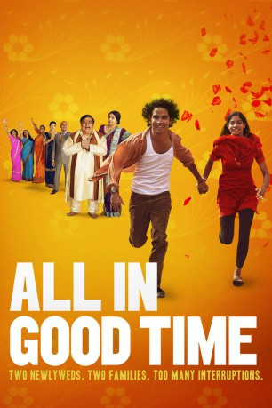

#7639 Hochzeitsnacht mit Hindernissen
Alternativ: All in Good Time
 
 IMDB-Wertung: 5.7 / 10
IMDB-Wertung: 5.7 / 10  Metascore: 0
Metascore: 0 
Am Ende der Hochzeitsfeier von Atul und Vina ist ein Vater hoffnungslos betrunken, tanzt und fordert andere Hochzeitsgäste zum Armdrücken heraus. Dass dieses Verhalten die ganze Feier ruiniert, ist offensichtlich. Als es höchste Zeit ist ins Bett zu gehen, ist Atul so bedauernswert gehemmt von der Nähe seiner Eltern, dass er es nicht schafft die Hochzeitsnacht zu vollziehen. Als am Tag nach der Feier auch noch die lang ersehnten Flitterwochen abgesagt werden, bleibt dem frisch verheirateten Paar nichts anderes übrig, als bei Atuls Eltern einzuziehen. Als sich neugierige Familienmitglieder und tratschende Nachbarn auch noch mit dem Ziel verschwören, das Paar am Vollzug ihrer Ehe zu hindern, brechen Atul und Vina in Panik aus…
Jahr: 2012
Dauer: 93 Minuten
FSK: 12
Land: England Studio: Koch MediaTonspuren: DTS - ,
Untertitel: Deutsch,
Auflösung: 1080p (1920x816) Größe: 4925 MB
Genre: Komödie
Regisseur: Nigel Cole
Drehbuch: Stein Leikanger
Soundtrack:
Darsteller:
 Reece Ritchie als Atul
Reece Ritchie als Atul- Amara Karan als Vina
- Harish Patel als Eeshwar
 Meera Syal als Lopa
Meera Syal als Lopa Neet Mohan als Jay Dutt
Neet Mohan als Jay Dutt Hassani Shapi als Laxman Patel
Hassani Shapi als Laxman Patel- Shelley King als Auntie Laxmi
- Arsher Ali als Etash
- Christine Bottomley als Molly Batt
 Jonathan Jaynes als Man at Airport
Jonathan Jaynes als Man at Airport- Shaheen Khan als Lata Patel
- Sudha Bhuchar als Auntie Nushie
- Rani Moorthy als Auntie Sudha
- Simon Nagra als Jivaj Batt
- Tarlochan Singh Nandra als Dholl Player
- Ramrik Bhatt als Priest
- Sue Vincent als Woman at Airport
- Ozzie Yue als Mr. Dinesh
- Amith Rahman als Young Brijesh
- Aliyza Shahi als Young Lopa
- Vikas Nair als Young Eeshwar
- Angie Inwards als Beryl , uncredited
Datei: X:\2012(G-M)\Hochzeitsnacht mit Hindernissen (2012, FSK12, 1920x816).mkv seit 29.11.2017
Festplatte: HD 2012(A-M)
 Es gibt insgesamt 112 Filme in der Gruppe '2012(G-M)'
Es gibt insgesamt 112 Filme in der Gruppe '2012(G-M)'